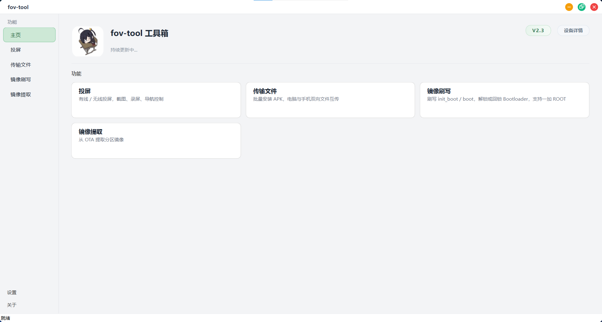

更新日志
更多内容
1026_安卓投屏工具
提取码 1026
下载
这是一款专门为安卓设备打造的一个投屏工具，可实现无延迟连接，当前只支持有线方式连接，这款工具画质与帧率无上限，投屏效果完全由设备硬件性能决定，设备支持多高，即可输出多高。
系统兼容性：最低 Windows 7 SP1（32位/64位），最高 Windows 11（32位/64位）
此工具为特殊专供，密码请联系项目作者1026。

1026过验证
最新 v1.8
提取码 1026
v1.8
2026.2.19 00:18
下载
增加灰灰频道验证
添加distortion驱动频道验证
v1.7
2026.2.16 8:56
替换新的林羽频道验证
新增30秒内无操作自动结束进程
删除一些无用内容
修改了脚本里的一些内容（可能导致部分安卓设备报错）
v1.6
2026.2.15 17:49
删除小雪频道验证
v1.5
2026.2.13 20:08
删除末尾云端服务相关内容 以及末尾脚本已被执行xx次
开头新增协议 15秒内无操作默认视为同意
v1.4
2026.2.1 21:12
修复林羽过验证失败
v1.3
2026.1.29 20:44
修复A内核生成文件可能失败的问题
新增牛逼哥的频道验证
v1.2
2026.1.7 4:42
新增过Cycle1337频道验证
v1.1
2026.1.6 7:35
新加雷蛇、TWT、RT的频道验证
v1.0
2025.11.25 1:22
初始版本支持内核频道验证：林羽、小雪、黑雪、橘子、落叶、ZERO、葫芦娃、A内核
无计划开放早期版本
1026修改ID工具
最新 v1.2
提取码 1026
卡密
v1.2
2026.2.3 23:36
下载
修复获取错误ID和显示异常
新增自动备份原ID功能（以防应用异常）可选还原应用原ID
和平精英 三角洲行动 王者荣耀 这三款应用已内置进脚本 无需自己手动复制包名修改
v1.1
2026.1.28 5:10
此前版本卡密逻辑存在异常，未激活状态下仍会计算使用时长。现已修复，新版将在激活成功后正式开始计时。
v1.0
2026.1.27 9:07
初始版本：查看设备ID软件ID；设备ID和软件ID均支持修改；可单次修改或多次修改设备ID与软件ID
无计划开放早期版本
1026游戏清理+查举报
最新 v1.4
提取码 1026
卡密
v1.4
2026.3.14 23:41
下载
增加和平精英查询举报数量功能
v1.31
2026.3.8 8:29
修复语法报错
v1.3
2026.3.4 14:35
加入三角洲国服被举报查询数量功能
v1.2
2026.2.28 7:31
正式替换为云更新（后续更新无需替换新工具）
加了多个网络请求方案
v1.1
2026.2.12 9:38
新增和平精英清理
v1.0
2026.2.10 22:31
初始版本：支持三角洲国服清理
无计划开放早期版本
1026一键配置工具
最新 v1.65
提取码 1026
v1.65
2026.4.15 19:02:50
下载
更新3绿密钥
v1.6
2026.4.14 19:55:13
新增更多功能子菜单
新增跳转官网/QQ群/TG子菜单
新增导出密钥文件功能
新增导出隐藏应用列表配置文件功能
新增导出BL列表文件功能
新增一键导出所有配置文件功能
新增跳转官网、QQ群、TG功能
修复部分设备解压失败问题，增加多重解压尝试方案
导出文件时可直接回车使用默认存储路径
v1.55
2026.4.14 00:30:25
云更新强制跳转官网
ts密钥更名为密钥(方便辨识)
v1.5
2026.4.13 18:55:10
云更新导出日志功能
v1.4
2026.4.9 17:02:30
修复密钥文件大小异常问题
增加日志功能（存放在本地的tmp文件夹）
v1.31
2026.4.8 20:22:50
云更新三绿密钥
v1.3
2026.4.8 9:28:30
云更新2绿密钥
云更新隐藏应用列表配置
v1.21
2026.4.3 18:06:30
云更新三绿密钥
v1.2
2026.4.3 3:56:30
删除部分不兼容代码
每个下载请求增加30秒超时逻辑
v1.1
2026.4.1 19:39
云更新bl列表
云更新2绿密钥
v1.01
2026.3.25 19:42
云更新最新3绿密钥
v1.0
2026.3.25 17:57
初始版本：隐藏应用列表配置文件一键配置；一键更新密钥；更换云更新
无计划开放早期版本
1026日志缓存清理模块
最新 v1.2
提取码 1026
模块版本：系统完全启动后实时监听和平精英进程，检测到进程后每两秒检测一次；和平精英进程退出后自动清理 ano_tmp 文件夹。下次启动重复此操作。
v1.2
2026.4.6 2:43
下载
完全解决模块不生效的问题
适配所有面具
v1.1
2026.3.12 5:21
尝试修复模块无效果的问题
v1.0
2026.3.8 14:32
初始版本：清理ano_tmp文件夹
适配所有面具
无计划开放早期版本
--:--:--